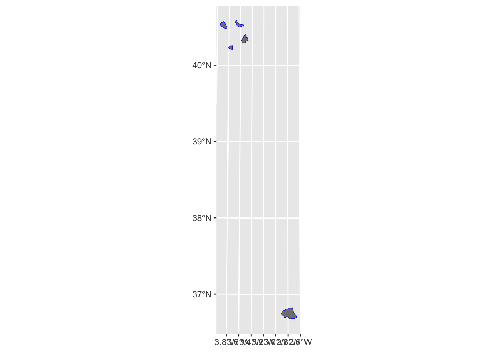

![]()
library(tidyverse)
library(sf)
library(here)
library(DT)
trips_per_person_file_2020_03_14 <- here("data/raw_data_cache/v1/maestra2-mitma-municipios/ficheros-diarios/year=2020/month=3/day=14/maestra_2_mitma_municipio.txt.gz")
trips_per_person_file_2020_10_01 <- here("data/raw_data_cache/v1/maestra2-mitma-municipios/ficheros-diarios/year=2020/month=10/day=1/maestra_2_mitma_municipio.txt.gz")
municipal_boundaries_data_file <- here("data/raw_data_cache/v1/zonificacion-municipios/municipios_mitma.shp")
district_boundaries_data_file <- here("data/raw_data_cache/v1/zonificacion-distritos/distritos_mitma.shp")Mismatch of zone ids in spatial data and trips per person table for municipal zoning
tabular data
incorrect data
zone IDs mismatch
importance: high
Status: ⚠️ active
Importance: 3 - high
Summary: The zone IDs in the municipal trips per person data (maestra2-mitma-municipios) are not consistent with the zone IDs in the municipal boundaries data (zonificacion-municipios/municipios_mitma.shp). TODO: list mismatching ids?
Expected Results: The zone IDs in the municipal trips per person data (maestra2-mitma-municipios) should be consistent with the zone IDs in the municipal boundaries data (zonificacion-municipios/municipios_mitma.shp).
Steps to Reproduce
- Load Data
Load libraries and define data files.
Load the data.
trips_per_person_2020_03_14 <- readr::read_delim(trips_per_person_file_2020_03_14, delim = "|", show_col_types = FALSE, name_repair = "unique_quiet")
trips_per_person_2020_10_01 <- readr::read_delim(trips_per_person_file_2020_10_01, delim = "|", show_col_types = FALSE, name_repair = "unique_quiet")
municipal_boundaries <- read_sf(municipal_boundaries_data_file)
district_boundaries <- read_sf(district_boundaries_data_file)glimpse(trips_per_person_2020_03_14)Rows: 8,744
Columns: 4
$ fecha <dbl> 20200314, 20200314, 20200314, 20200314, 20200314, 202003…
$ distrito <chr> "01001_AM", "01001_AM", "01001_AM", "01001_AM", "01002",…
$ numero_viajes <chr> "0", "1", "2", "2+", "0", "1", "2", "2+", "0", "1", "2",…
$ personas <dbl> 5498.025, 320.152, 1472.050, 1796.115, 5392.325, 728.374…glimpse(trips_per_person_2020_10_01)Rows: 8,764
Columns: 4
$ fecha <dbl> 20201001, 20201001, 20201001, 20201001, 20201001, 202010…
$ distrito <chr> "01001_AM", "01001_AM", "01001_AM", "01001_AM", "01002",…
$ numero_viajes <chr> "0", "1", "2", "2+", "0", "1", "2", "2+", "0", "1", "2",…
$ personas <dbl> 2614.317, 245.434, 2280.543, 3836.331, 3956.197, 497.415…glimpse(municipal_boundaries)Rows: 2,205
Columns: 2
$ ID <chr> "16078", "07058_AM", "36057", "38033_AM", "06109_AM", "32007_…
$ geometry <MULTIPOLYGON [m]> MULTIPOLYGON (((583277.4 44..., MULTIPOLYGON (((…glimpse(district_boundaries)Rows: 2,850
Columns: 2
$ ID <chr> "2408910", "22117_AM", "2305009", "07058_AM", "2305006", "230…
$ geometry <MULTIPOLYGON [m]> MULTIPOLYGON (((290940.1 47..., MULTIPOLYGON (((…Results
- Not all zone IDs in the municipal level trips per person dataset can be found in the municipal boundaries dataset.
Not all zone (distrito) IDs in the municipal level trips per person dataset can be found in the municipal boundaries dataset. For example, on 2020-03-14, all IDs do mathc, but on 2020-10-01, 5 IDs mismatch.
sum(!unique(trips_per_person_2020_03_14$distrito) %in% unique(municipal_boundaries$ID))[1] 0sum(!unique(trips_per_person_2020_10_01$distrito) %in% unique(municipal_boundaries$ID))[1] 5Here are the mismatching IDs:
unique(trips_per_person_2020_10_01$distrito)[
!unique(trips_per_person_2020_10_01$distrito) %in% unique(municipal_boundaries$ID)
][1] "04902" "28006" "28106" "28123" "28127"In the spatial dataset we do not have the IDs above, however we do have similar IDs with extra digits:
municipal_boundaries |> filter(ID %in% c("0490201", "2800601", "2810601", "2812301", "2812701")) # these IDs existSimple feature collection with 5 features and 1 field
Geometry type: MULTIPOLYGON
Dimension: XY
Bounding box: xmin: 419573.3 ymin: 4059438 xmax: 530623 ymax: 4493337
Projected CRS: ETRS89 / UTM zone 30N (N-E)
# A tibble: 5 × 2
ID geometry
* <chr> <MULTIPOLYGON [m]>
1 2812301 (((455833.8 4471420, 455908.9 4472066, 456023.8 4472526, 455932.7 447…
2 0490201 (((510312.5 4064495, 509896.8 4064947, 509553.9 4065352, 509030.9 406…
3 2810601 (((437139.6 4452138, 437133.4 4451989, 437585.1 4451440, 437385.4 445…
4 2812701 (((428935.1 4480873, 428572.2 4481050, 428255.8 4481124, 427733.7 448…
5 2800601 (((446243 4484315, 445604.6 4484363, 445359.4 4484328, 445102.9 44846…municipal_boundaries |> filter(ID %in% c("04902", "28006", "28106", "28123", "28127")) # these do notSimple feature collection with 0 features and 1 field
Bounding box: xmin: NA ymin: NA xmax: NA ymax: NA
Projected CRS: ETRS89 / UTM zone 30N (N-E)
# A tibble: 0 × 2
# ℹ 2 variables: ID <chr>, geometry <GEOMETRY [m]>It seems like at some point in time in this dataset, the IDs have changed, as we cannot find the same IDs in the data for different dates, as seen below:
trips_per_person_2020_03_14 |> filter(distrito %in% c("0490201", "2800601", "2810601", "2812301", "2812701")) |> nrow()[1] 20trips_per_person_2020_03_14 |> filter(distrito %in% c("04902", "28006", "28106", "28123", "28127")) |> nrow()[1] 0trips_per_person_2020_10_01 |> filter(distrito %in% c("0490201", "2800601", "2810601", "2812301", "2812701")) |> nrow()[1] 0trips_per_person_2020_10_01 |> filter(distrito %in% c("04902", "28006", "28106", "28123", "28127")) |> nrow()[1] 20The longer IDs are not expected to be in the spatial data for municipalities, but they are there, as seen below:
municipal_boundaries |> filter(ID %in% c("0490201", "2800601", "2810601", "2812301", "2812701")) |> nrow() # these IDs exist[1] 5municipal_boundaries |> filter(ID %in% c("04902", "28006", "28106", "28123", "28127")) |> nrow() # these do not[1] 0What makes the matters more complicated, is that these longer IDs also can be found in the district boundaries, as seen below:
district_boundaries |> filter(ID %in% c("0490201", "2800601", "2810601", "2812301", "2812701")) |> nrow() # these IDs exist[1] 5district_boundaries |> filter(ID %in% c("04902", "28006", "28106", "28123", "28127")) |> nrow() # these do not[1] 0Threfore it is unclear with which spatial data the trip counts in the trips per person data for municipalities is actually associated.
Let’s filter the spatial data for both districts and municipalities to only include these IDs and compare them visually.
municipal_boundaries_subset <- municipal_boundaries |> filter(ID %in% c("0490201", "2800601", "2810601", "2812301", "2812701"))
district_boundaries_subset <- district_boundaries |> filter(ID %in% c("0490201", "2800601", "2810601", "2812301", "2812701"))ggplot()+
geom_sf(data = municipal_boundaries_subset, fill = "grey50", col = NA) +
geom_sf(data = district_boundaries_subset, fill = NA, col = "blue")
These seem to match perfectly, therefore they can probably be assumed to be the same.
Is there such an issue with the district level data?
trips_per_person_2020_03_14_distr <- readr::read_delim(
here("data/raw_data_cache/v1/maestra2-mitma-distritos/ficheros-diarios/year=2020/month=3/day=14/maestra_2_mitma_distrito.txt.gz"),
delim = "|", show_col_types = FALSE, name_repair = "unique_quiet")
trips_per_person_2020_10_01_distr <- readr::read_delim(
here("data/raw_data_cache/v1/maestra2-mitma-distritos/ficheros-diarios/year=2020/month=10/day=1/maestra_2_mitma_distrito.txt.gz"),
delim = "|", show_col_types = FALSE, name_repair = "unique_quiet")
trips_per_person_2020_03_14_distr |> filter(distrito %in% c("0490201", "2800601", "2810601", "2812301", "2812701")) |> nrow()[1] 20trips_per_person_2020_03_14_distr |> filter(distrito %in% c("04902", "28006", "28106", "28123", "28127")) |> nrow()[1] 0trips_per_person_2020_10_01_distr |> filter(distrito %in% c("0490201", "2800601", "2810601", "2812301", "2812701")) |> nrow()[1] 20trips_per_person_2020_10_01_distr |> filter(distrito %in% c("04902", "28006", "28106", "28123", "28127")) |> nrow()[1] 0No such issue, the data for districts seem to be consistent.
Is there such an issue with the origin-destination data?
od_municip_2020_03_14 <- readr::read_delim(
here("data/raw_data_cache/v1/maestra1-mitma-municipios/ficheros-diarios/year=2020/month=3/day=14/maestra_1_mitma_municipio.txt.gz"),
delim = "|", show_col_types = FALSE, name_repair = "unique_quiet")
od_municip_2020_10_01 <- readr::read_delim(
here("data/raw_data_cache/v1/maestra1-mitma-municipios/ficheros-diarios/year=2020/month=10/day=1/maestra_1_mitma_municipio.txt.gz"),
delim = "|", show_col_types = FALSE, name_repair = "unique_quiet")
od_municip_2020_03_14 |> filter(origen %in% c("0490201", "2800601", "2810601", "2812301", "2812701")) |> nrow()[1] 5900od_municip_2020_03_14 |> filter(origen %in% c("04902", "28006", "28106", "28123", "28127")) |> nrow()[1] 0od_municip_2020_03_14 |> filter(destino %in% c("0490201", "2800601", "2810601", "2812301", "2812701")) |> nrow()[1] 5874od_municip_2020_03_14 |> filter(destino %in% c("04902", "28006", "28106", "28123", "28127")) |> nrow()[1] 0od_municip_2020_10_01 |> filter(origen %in% c("0490201", "2800601", "2810601", "2812301", "2812701")) |> nrow()[1] 0od_municip_2020_10_01 |> filter(origen %in% c("04902", "28006", "28106", "28123", "28127")) |> nrow()[1] 8293od_municip_2020_10_01 |> filter(destino %in% c("0490201", "2800601", "2810601", "2812301", "2812701")) |> nrow()[1] 0od_municip_2020_10_01 |> filter(destino %in% c("04902", "28006", "28106", "28123", "28127")) |> nrow()[1] 8222The data for origin-destination suffers from the same issue as the trips per person data.
Check district level data:
od_distr_2020_03_14 <- readr::read_delim(
here("data/raw_data_cache/v1/maestra1-mitma-distritos/ficheros-diarios/year=2020/month=3/day=14/maestra_1_mitma_distrito.txt.gz"),
delim = "|", show_col_types = FALSE, name_repair = "unique_quiet"
)
od_distr_2020_10_01 <- readr::read_delim(
here("data/raw_data_cache/v1/maestra1-mitma-distritos/ficheros-diarios/year=2020/month=10/day=1/maestra_1_mitma_distrito.txt.gz"),
delim = "|", show_col_types = FALSE, name_repair = "unique_quiet"
)
od_distr_2020_03_14 |> filter(origen %in% c("0490201", "2800601", "2810601", "2812301", "2812701")) |> nrow()[1] 20720od_distr_2020_03_14 |> filter(origen %in% c("04902", "28006", "28106", "28123", "28127")) |> nrow()[1] 0od_distr_2020_03_14 |> filter(destino %in% c("0490201", "2800601", "2810601", "2812301", "2812701")) |> nrow()[1] 20832od_distr_2020_03_14 |> filter(destino %in% c("04902", "28006", "28106", "28123", "28127")) |> nrow()[1] 0od_distr_2020_10_01 |> filter(origen %in% c("0490201", "2800601", "2810601", "2812301", "2812701")) |> nrow()[1] 34672od_distr_2020_10_01 |> filter(origen %in% c("04902", "28006", "28106", "28123", "28127")) |> nrow()[1] 0od_distr_2020_10_01 |> filter(destino %in% c("0490201", "2800601", "2810601", "2812301", "2812701")) |> nrow()[1] 34559od_distr_2020_10_01 |> filter(destino %in% c("04902", "28006", "28106", "28123", "28127")) |> nrow()[1] 0District level data does not contain shorter zone IDs.
Let us chek if the district level data on number of trips matches the number of trips per person in the municipality level data.
od_municip_2020_03_14 |> filter(origen %in% c("0490201") & destino %in% c("03005_AM"))# A tibble: 2 × 7
fecha origen destino periodo distancia viajes viajes_km
<dbl> <chr> <chr> <chr> <chr> <dbl> <dbl>
1 20200314 0490201 03005_AM 13 100+ 7.58 1771.
2 20200314 0490201 03005_AM 19 100+ 9.87 2245.od_distr_2020_03_14 |> filter(origen %in% c("0490201") & destino %in% c("03005_AM"))# A tibble: 2 × 11
fecha origen destino actividad_origen actividad_destino residencia edad
<dbl> <chr> <chr> <chr> <chr> <chr> <lgl>
1 20200314 0490201 03005_AM otros otros 03 NA
2 20200314 0490201 03005_AM otros otros 46 NA
# ℹ 4 more variables: periodo <chr>, distancia <chr>, viajes <dbl>,
# viajes_km <dbl>od_municip_2020_10_01 |> filter(origen %in% c("04902") & destino %in% c("03058_AM"))# A tibble: 2 × 7
fecha origen destino periodo distancia viajes viajes_km
<dbl> <chr> <chr> <chr> <chr> <dbl> <dbl>
1 20201001 04902 03058_AM 13 100+ 10.4 2382.
2 20201001 04902 03058_AM 22 100+ 11.9 2598.od_distr_2020_10_01 |> filter(origen %in% c("0490201") & destino %in% c("03058_AM"))# A tibble: 2 × 11
fecha origen destino actividad_origen actividad_destino residencia edad
<dbl> <chr> <chr> <chr> <chr> <chr> <lgl>
1 20201001 0490201 03058_AM otros casa 03 NA
2 20201001 0490201 03058_AM otros otros 30 NA
# ℹ 4 more variables: periodo <chr>, distancia <chr>, viajes <dbl>,
# viajes_km <dbl>The data matches between municipal and district level datasests. Therefore, we can confrim that shorter zones IDs in some of the municipal level tables actually correspond to the longer zone IDs.
Conclusion and how the issue should be fixed
The zone IDs in the tables for municipal level trips per person data and spatial data do not match starting with a certain date. The zones with IDs “04902”, “28006”, “28106”, “28123”, “28127” should be recodeed to “0490201”, “2800601”, “2810601”, “2812301”, “2812701” during the import process of the trips per person tables for the municipal level data. This can be easily done using the existing approach of SQL-based view creation in the {spanishoddata} R package.
Links to the original files
files <- spanishoddata:::spod_available_data(1, data_dir = here("data"))
# Filter relevant files
relevant_files <- files |>
filter((local_path %in% c(
trips_per_person_file_2020_03_14,
trips_per_person_file_2020_10_01)) |
grepl("zonificacion", local_path)
)
# Create HTML links
relevant_files <- relevant_files |>
mutate(target_url = paste0("<a href='", target_url, "' target='_blank'>", target_url, "</a>"))
# Render the DT table with links
datatable(relevant_files, escape = FALSE, options = list(pageLength = 5))